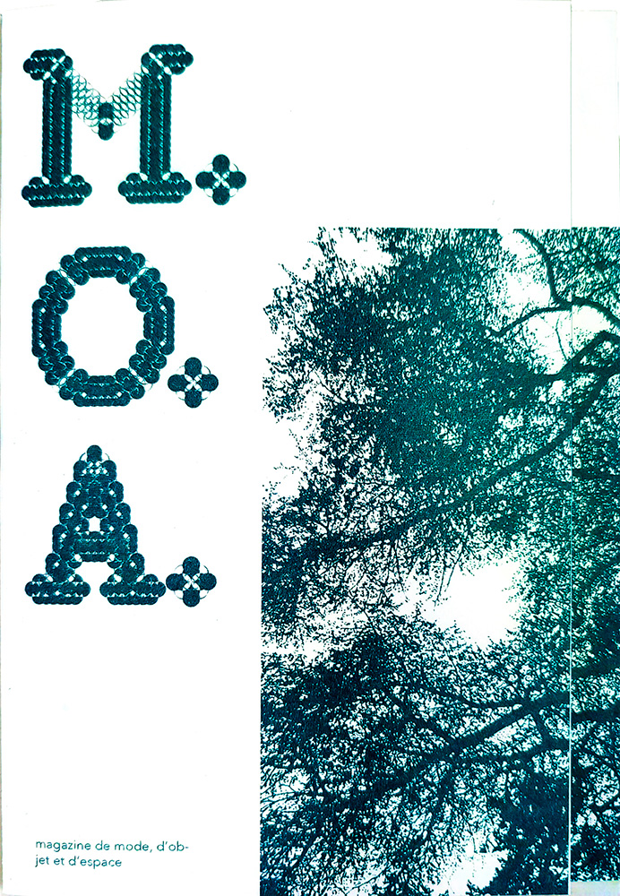
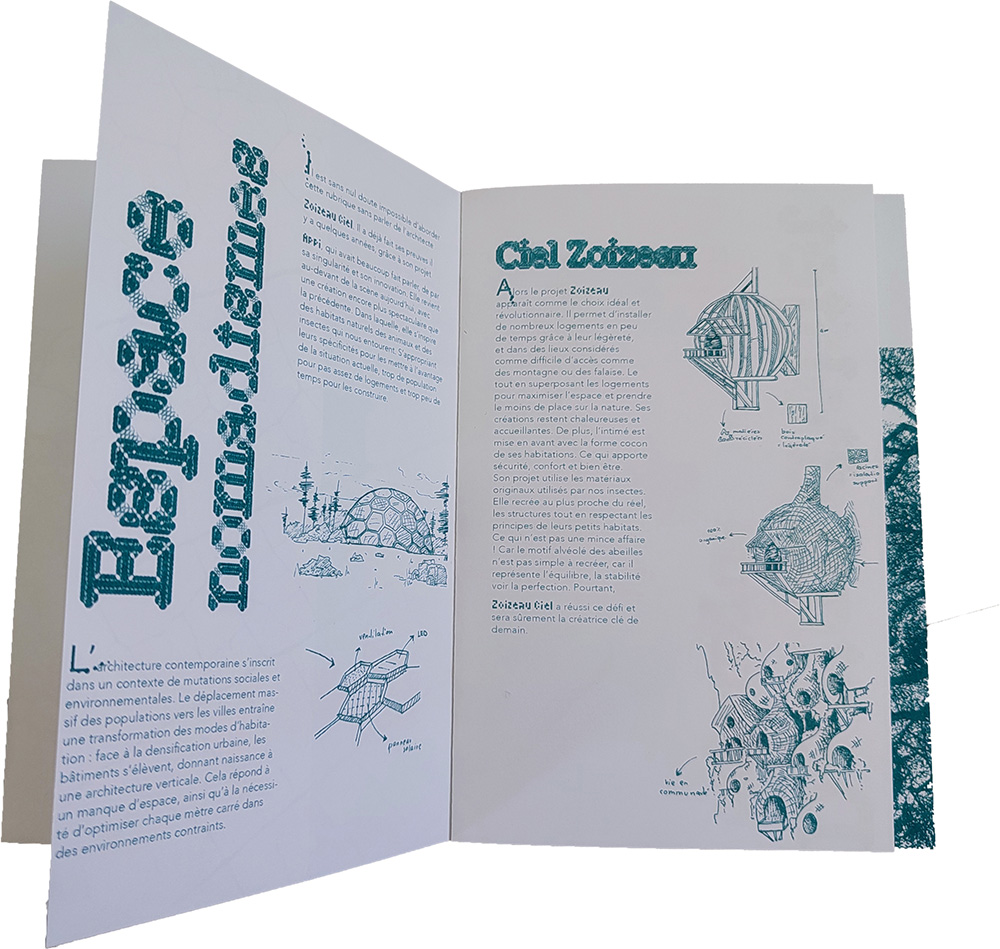
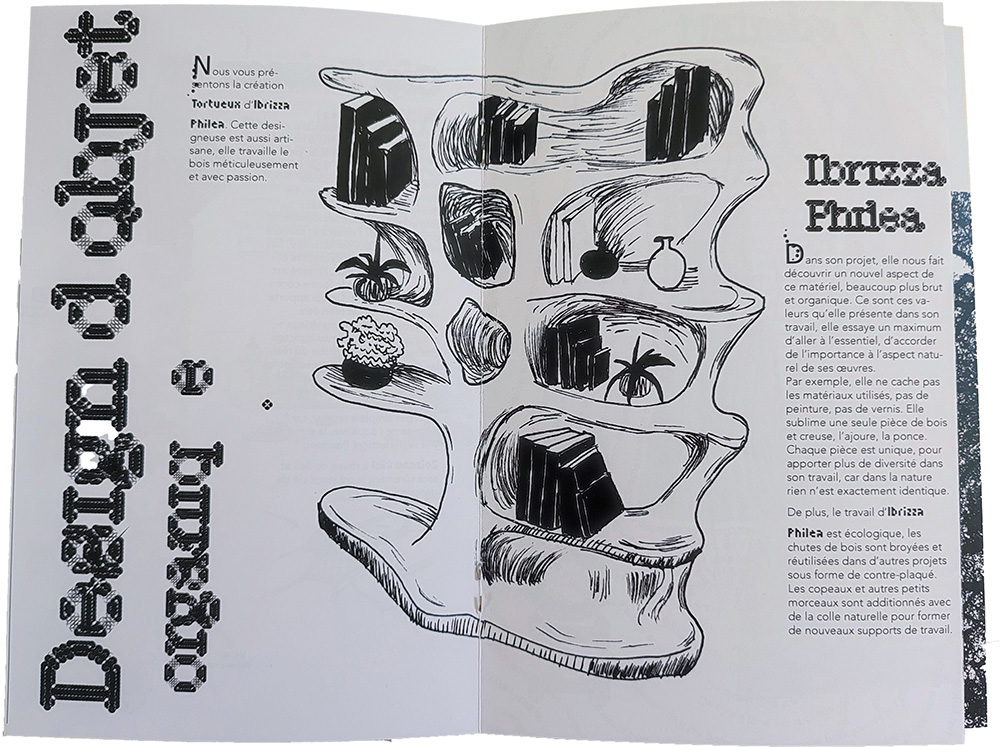

Ce projet mené dans le cadre d’un workshop avait pour ambition de se projeter dans un futur proche ou lointain et d’y imaginer un jour nal ou magazine du «future». Le magazine conçu s’inscrit dans un futur utopique où l’humanité place la nature au cœur de ses priorités. Dans cette société l’in novation et la création sont entièrement repensées pour respecter l’environnement. Ce magazine de design propose des rubriques dédiées à la mode l’architecture et les objets du quotidien tous conçus dans une démarche durable et harmonieuse. Une version noir et blanc a également été réalisée.
ÉDITION
M.O.A


